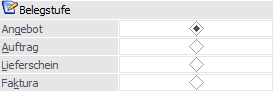
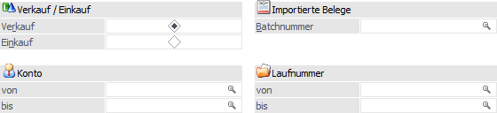
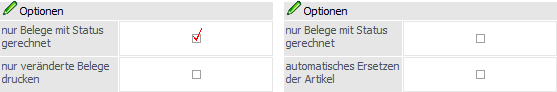
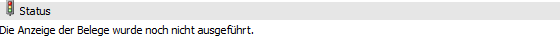

In dem Register "Belegdruck" können Selektionen und Einstellungen für den Druck der Belege vorgenommen werden. Die getätigten Eingaben wirken sich direkt auf das Register "Selektion" aus.

Belegstufe

Ø Angebot / Auftrag / Lieferschein / Faktura
Zuerst muss die Belegstufe ausgewählt werden, für welche Belege gedruckt werden sollen. Je nachdem, welche Belegstufe gewählt wurde, stehen unterschiedliche Optionen (siehe auch Bereich "Optionen") zur Verfügung:
ü Angebot
In der Stufe "Angebot"
kann gewählt werden, ob nur jene Belege gedruckt werden sollen, die den Status
gerechnet (Druckstatus "D") besitzen.
ü Auftrag
In der Stufe "Auftrag"
kann bei Aktivierung der Option "nur Beleg mit Status gerechnet" zusätzlich
gewählt werden, ob nur veränderte Belege gedruckt werden sollen. Dadurch werden
nur jene Belege zum Druck vorgeschlagen, welche über die Sperrliste (WinLine
FAKT - Erfassen - Kundenbestellungen - Sperrliste), das Lieferantenlieferungen
bearbeiten (WinLine FAKT - Einkauf - Lieferantenlieferungen bearbeiten -
Tabellenbutton " Lieferdatum ändern") oder den Leitstand (WinLine PPS -
Produktion - Leitstand / Recalc - Button " Kundenaufträge - Lieferdatum ändern")
verändert wurden.
ü Lieferschein / Faktura
In den
Stufen "Lieferschein" und "Faktura" gibt es einerseits die Möglichkeit nur
Belege mit Status gerechnet (Druckstatus "D") zu drucken und andererseits die
Möglichkeit bei einem Druck in einer neuen Stufe zu sagen, dass ein
Ersatzartikel genommen werden soll, wenn von dem Ursprungsartikel nicht genug
auf Lager ist (nähere Informationen entnehmen Sie bitte dem WinLine FAKT -
Handbuch, Kapitel Ersatzartikelnummer).
Hinweis
Damit ein Beleg automatisch gewandelt werden kann, muss dieser in der zu druckenden Belegstufe den Druckstatus "A" aufweisen. Die Vorstufe muss dabei einen Status "N", "D" oder "*" aufweisen. Handelt es sich um einen gewünschten nochmaligen Druck, dann muss in der zu druckenden Belegstufe der Status "D" vorliegen.
Selektion

Ø Verkauf / Einkauf
An dieser Stelle kann definiert werden, ob Belege aus dem Bereich "Verkauf" oder "Einkauf" berücksichtigt werden sollen.
Ø Konto von / bis
An dieser Stelle kann auf die Kunden- bzw. Lieferantennummer eingeschränkt werden.
Hinweis
Ob es sich bei der Nummer um jene des Rechnungsempfängers oder der Lieferadresse handelt, ist abhängig von der Einstellung "Hauptkonto für Belege" (WinLine START - Parameter - FAKT-Parameter - Belege - Allgemein - Option "Hauptkonto für Belege").
Ø Batchnummer
Wenn Belege über den Batchbeleg importiert werden, kann eine Batchnummer vergeben werden, damit Belege eines Importlaufes zusammengefasst werden können. Über die Matchcodefunktion kann nach allen vorhandenen Batchnummern gesucht werden. In weiterer Folge werden nur mehr die Belege zum Druck vorgeschlagen, die der Batchnummer angehören.
Ø Laufnummer
Hier kann auf die Laufnummern der Belege selektiert werden.
Optionen

Die im Bereich "Optionen" zur Verfügung gestellten Einstellungen sind abhängig von der zuvor gewählten Belegstufe:
Ø nur Belege mit Status gerechnet
Diese Option steht für alle Belegstufen zur Verfügung. Sobald sie aktiviert wurde, werden nur Belege zum Druck vorgeschlagen, welche in der selektierten Belegstufe den Druckstatus "D" aufweisen.
Ø nur veränderte Belege drucken
Diese Option steht nur in der Stufe "Auftrag" zur Verfügung, wenn zuvor die Option "nur Beleg mit Status gerechnet" aktiviert wurde. Durch Aktivierung werden nur jene Belege zum Druck vorgeschlagen, welche über die Sperrliste (WinLine FAKT - Erfassen - Kundenbestellungen - Sperrliste), das Lieferantenlieferungen bearbeiten (WinLine FAKT - Einkauf - Lieferantenlieferungen bearbeiten - Tabellenbutton " Lieferdatum ändern") oder den Leitstand (WinLine PPS - Produktion - Leitstand / Recalc - Button " Kundenaufträge - Lieferdatum ändern") verändert wurden.
Ø automatisches Ersetzen der Artikel
Diese Option steht nur in den Belegstufen "Lieferschein" und "Faktura" zur Verfügung. Durch Aktivierung kann definiert werden, dass bei einem Druck in einer neuen Stufe ein Ersatzartikel genommen werden soll, wenn von dem Ursprungsartikel nicht genug auf Lager ist (nähere Informationen entnehmen Sie bitte dem WinLine FAKT - Handbuch, Kapitel Ersatzartikelnummer).
Info

Ø Status
An dieser Stelle wird ausgewiesen, ob bereits in das Register "Selektion" wurde und wenn ja, wie viele Belege für den Druck selektiert wurden.